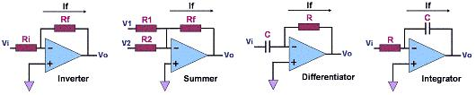

Operational
Amplifiers (Op Amps)
An
Operational
Amplifier,
or
Op Amp,
is a dual-input, single-output linear amplifier that exhibits a high open-loop
gain, high input resistances, and a low output resistance. One of the
inputs of an operational amplifier amp is
non-inverting
while the other is
inverting.
The output Vout of an operational amplifier without feedback
(also known as open-loop) is given by the formula:
Vout = A(Vp-Vn)
where A is the
open-loop gain of the op amp, Vp is the voltage at the non-inverting
input, and Vn is the voltage at the inverting input. The
open-loop gain
of a typical op amp is in the range of
105-106.
The operational
amplifier got its name from the fact that it can be configured to perform
many different
mathematical
operations.
Depending on its feedback circuit and biasing, an op amp can be made to
add, subtract, multiply, divide, negate, and, interestingly, even perform
calculus
operations such as differentiation and integration. Of course, aside
from these operations, op amps are also found in a very large number of
applications. In fact, many consider the op amp as the
foundation
of many analog semiconductor products today.
Because of the
very high resistance exhibited by the inputs of an op amp, the currents
flowing through them are very
small.
The current flowing in or out of an op amp's input pin, known as
input bias
current,
is basically just leakage current at the base or gate of the input
transistor of that input, which is why it is very small.
When
solving voltage/current equations for op amp circuits, the input currents
are usually assumed to be
zero.
For most of the commonly-used op-amp circuits, this means that the total
output current of the op amp is flowing through the
feedback circuit
between the
output and the inverting input (the feedback is usually connected to the
inverting input for operation stability).
As the main
path for an op amp's output current, the
feedback
circuit
used in an op amp largely determines how the op amp will function. There
are many ways to operate an op amp, but one commonly-used basic
configuration is to: 1)
provide it with balanced
supply
voltages (say, +/-15V, although single-supply operation is also commonly
used); 2) connect the
non-inverting
input to
ground
(either directly or with a passive element such as a resistor); 3) connect
a
feedback circuit
between the
output
and the
inverting
input; and 4)
connect a resistor between the inverting input and the input signal
source.
Figure 1 shows
some op amp circuits using this basic configuration.

Figure 1.
Some Common Operational Amplifier Circuits
Figure 1.
Some Common Operational Amplifier Circuits
Another special
characteristic of a close-looped op amp with
negative
feedback is the
zero
voltage drop
across
its inputs. Thus, in the circuits above, the voltage at the inverting
input is zero, in effect putting the inverting input at a
'virtual
ground.'
Table 1
shows the voltage/current equations governing the circuits in Figure 1
above,
based on the assumptions that the currents flowing through the op amp
inputs and the voltage
across them are zero.
Table 1. Voltage/Current
Equations for the Op Amp Circuits in Figure 1
|
Inverting Amplifier |
Summer |
Differentiator |
Integrator |
|
Vo = -
If(Rf);
Vi =
If(Ri);
Vo = - (Rf/Ri)
Vi |
Vo = -
If(Rf);
If =
V1/R1 + V2/R2;
Vo = -
Rf(V1/R1 + V2/R2) |
Vo = -
If(Rf);
If = C
dVi/dt
Vo = -RfC(dVi/dt)
|
Vo =
-1/C ∫ If dt;
If =
Vi/R;
Vo =
-1/(RC) ∫ Vi dt;
|
A typical
op-amp is constructed with the following parts: 1) a
differential
input stage,
which consists of a matched pair of bipolar transistors or field effect
transistors (FET's) that produce an output that's proportional to the
difference between the input signals; 2) an
intermediate-gain stage
that amplifies the output of the differential input stage; and 3) a
push-pull
output stage
that is capable
of delivering a large current to the load, hence the small output
impedance.
See Also:
Op Amp
Parameters;
Instrumentation Amplifiers; What is a
Semiconductor?
HOME
Copyright
©
2001-Present
www.EESemi.com.
All Rights Reserved.